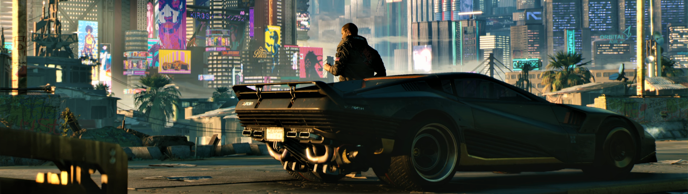
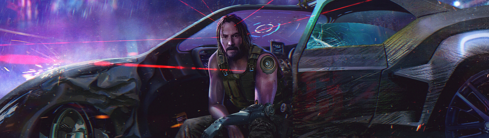

Detrás de todos los errores, memes y demás comentarios, en Cyberpunk 2077 se esconde un juego emocionante y divertido, pero que está muy lejos de las promesas que CD Projekt Red le hizo a la industria de los videojuegos durante los últimos 8 años. Entre las altas expectativas y los errores del juego, nuestro paso por Night City fue poco espectacular y con distracciones que no terminaron por atraparnos de la misma forma en que lo habían hecho los avances del juego. Una oportunidad que odiamos se haya desperdiciado, pero que esperamos sirva de ejemplo para el resto de los desarrolladores y publishers.
En fin. A más de un mes después de su lanzamiento y con el hype más bajo que nunca, llegó la hora de hablar a fondo sobre Cyberpunk 2077… el juego que deja en claro que la línea entre el GOTY y la decepción del año es sumamente delgada. Pero antes de continuar con la reseña me gustaría dejar una cosa muy clara: que un videojuego sea malo o no sirva no es culpa de las expectativas. Decir lo contrario es justificar el mal manejo del estudio o publisher, y, en consecuencia, se culpa a la persona que fue a comprar el juego. ¿Qué sentido tiene no esperar un juego, película o cualquier producto? Es igual de absurdo que desear que algo (lo que sea) esté malo solo porque lo espera mucha gente. Hay que madurar un poco.
Cyberpunk 2077 nos coloca en los pies de V, un personaje que, si bien creamos nosotros, tiene un pasado programado por los desarrolladores que responde a tres orígenes diferentes: chico de la calle, nómada o corpo. Esta decisión afecta principalmente el inicio del juego, pero tiene detalles importantes a lo largo de la historia; nada que invite a terminar el juego más de una vez, pero al menos querrás ver qué pasó en YouTube. La combinación de conceptos permite que nos sumerjamos de forma personal a la historia, sin descuidar que la campaña nos vincule totalmente al protagonista, o sea V.
V se convierte en el vehículo de la trama para el jugador y en la figura clave para entender Night City. Y en este punto es conveniente mencionar que dicha ciudad es un desastre futurista lleno de dolor y decadencia, donde el capitalismo ganó, las diferencias sociales están más marcadas que nunca y la tecnología se convirtió en el opio de las masas. Night City es una advertencia para nuestro presente, y al mismo tiempo una fantasía de ciencia ficción que quieres experimentar por completo. Gran parte de la magia del juego está en la ciudad y en cómo ésta ha definido a sus habitantes.
Para V, y muchos de los personajes, la vida es una carrera contra la muerte en la que el premio mayor no es sobrevivir, sino convertirse en una leyenda o, lo que es lo mismo, en el nombre de una bebida del bar más popular de la ciudad. No hay futuro, pues éste ya demostró que solo existe la decadencia, y la felicidad únicamente se vende en las esquinas. Vivir Night City es toda una experiencia y la historia de V es solo una de las miles que podríamos conocer en el juego… aunque en realidad llevamos dos historias al mismo tiempo.
Después de familiarizarnos con V y tras una misión que resulta en todo un desastre, nuestro protagonista termina infectado por una suerte de parásito virtual que hará todo lo posible por quedarse con el cuerpo de su huésped. Es justo aquí donde entra a escena Johnny Silverhand, un viejo rockero revolucionario que fue atrapado en forma de datos por culpa de la misma corporación que casi acaba con V. Johnny tiene 50 años muerto o, mejor dicho, lleva 50 años en una memoria USB de 2077; sus memorias, habilidades, pensamientos y personalidad fueron capturados en su totalidad, lo único que ya no existe de Jonnhy es su cuerpo.
Lo que en un principio parecía una historia típica se convierte en un experimento narrativo que lleva la idea de Fight Club a un nivel pocas veces presentado con tanta belleza. La historia de ambos comienza como una lucha por el control del cuerpo e incluso por los ideales del personaje, pero conforme todo avanza el panorama ofrece más posibilidades para el jugador a través de situaciones que responden a la naturaleza de Night City. De repente convertirse en leyenda no es una meta, sino una obligación para la persona que está detrás del control.
Cyberpunk 2077 se divide en tres actos: un largo comienzo, un intenso clímax y un desenlace lleno de posibilidades. La primera parte es demasiado larga e incluso puede ser tediosa… vaya, pasan como 4 horas antes de que acabe lo que podría ser considerado como el prólogo. Por otro lado, el segundo acto es la pieza clave del juego, lo que te hace conectar con la obra, los personajes y la ciudad. Unas 20 horas de juego dedicadas por completo a conocer Night City a través de balaceras, carreras y escapes peligrosos.